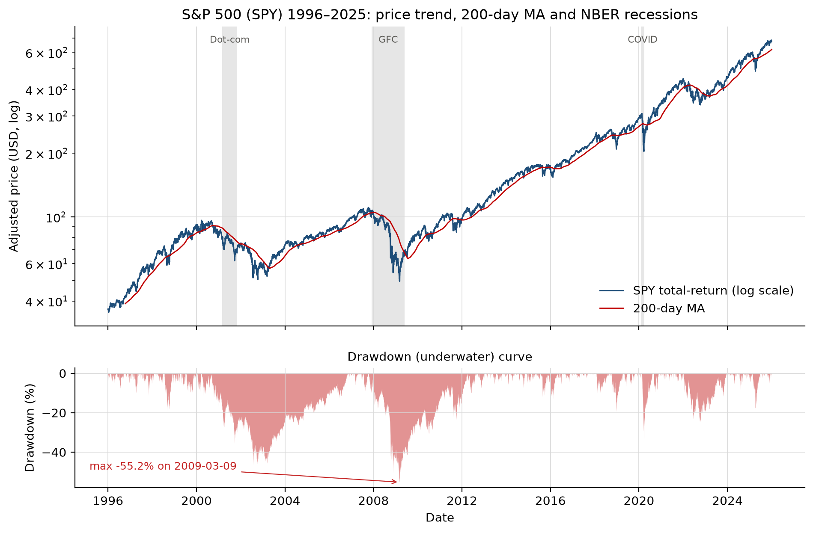
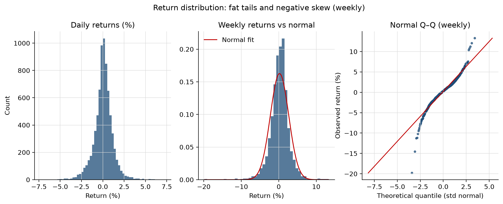
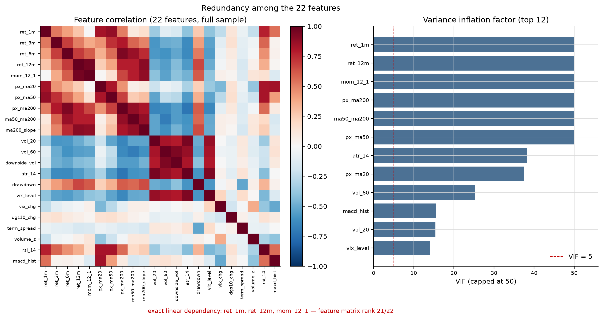

一句话结论
G05 · 1996–2025
主策略 R1：年化 6.5%、夏普 0.39、最大回撤 -36.8%；买入持有 11.2% / 0.59。结论：这套周频择时在样本外没有创造价值。
数字来自 reports/metrics.csv，由 uv run python -m src.pipeline 生成。
六条线（5 bps 单边成本）
| 策略 | 年化 | 夏普 | 最大回撤 | 年换手 |
|---|---|---|---|---|
| R1 逻辑回归（主策略） | 6.5% | 0.39 | -36.8% | 9.5 |
| R2 分位阈值 | 4.8% | 0.35 | -32.9% | 13.0 |
| R4 ridge/Kelly | 3.5% | 0.29 | -18.4% | 8.9 |
| 买入持有 | 11.2% | 0.59 | -51.5% | 0.1 |
| 恒定 60% | 7.6% | 0.59 | -34.2% | 0.0 |
| SMA200 | 8.5% | 0.61 | -21.2% | 3.0 |
页面导览
- P1：5 个标的怎么变成 1,566 行周表
- P2：30 年市场与“方向不可预测”的证据
- P3：22 特征、标签时点、18 折、5 项泄漏测试
- P4：逻辑回归 / 随机森林 / 三种下注规则
- P5：PCA、自编码器、DNN、CNN 的结论
- P6：净值怎么算出来，以及它说了什么
P1 数据与工程
负责人：P1
- 5 个标的：SPY（主）、^GSPC（对账）、^VIX（情绪）、DTB3 / DGS10（利率）
- 复权口径唯一：
f = adj_close / close - VIX 统一
shift(1)，宏观滞后 1 个交易日 - manifest 记录 url / 下载时间 / 行数 / sha256
质量结论
- 周面板 1,566 行 × 12 列，1996-01-05 ~ 2025-12-31，零缺失
- SPY 与 ^GSPC 日收益相关：全样本 0.9853，2010 年起 0.9985
- 异常只标注不改值：除息 121 次、极端周收益 1 次、零成交量 0
- 成分股只有当前 503 只快照（ADR-003），不画年度换手图
P2 探索性分析
负责人：P2
- 只用 1996–2005 验证假设，不碰测试集
- 各特征与下周收益的 Spearman 相关都在 0.07 以内
- 波动可预测：高波动成段聚集，离散度差 2.3 倍
- 22 个特征高度共线：23 对 |r| > 0.8，矩阵秩 21/22
关键图




P3 特征与防泄漏
负责人：P3
- 22 个特征，全部比率型；禁止价格绝对水平
- 标签：
t收盘决策 →t+1开盘买入 →t+2开盘卖出 - 18 折扩展窗口 + 2 周 purge；预处理只在训练折 fit
5 项泄漏测试
| 测试 | 结果 | 判据 |
|---|---|---|
| 特征截断不变性 | 改未来价格，历史特征不变 | 逐值相等 |
| 折内预处理 | 极端值不改变拟合参数 | 参数不变 |
| 标签时间对齐 | 四周价格手算一致 | 逐值相等 |
| 随机标签对照 | 合并 AUC 0.4875 | [0.45, 0.55] |
| 注入未来收益 | 合并 AUC 0.9996 | ≥ 0.95 |
P4 模型与决策
负责人：P4
- 主模型：L2 逻辑回归；对照：随机森林
- 超参只在 2006–2007 选一次并冻结
- 三种规则：R1 阈值 / R2 分位 / R4 回归 + 凯利
预测层：只比瞎猜强一点
| 预测器 | AUC | 平衡准确率 | Brier |
|---|---|---|---|
| 逻辑回归 | 0.5213 | 0.5260 | 0.2487 |
| 随机森林 | 0.4763 | 0.4872 | 0.2499 |
| 永远猜涨 | 0.5000 | 0.5000 | 0.4051 |
含义
AUC 0.522 对 0.500，几乎没有增量。所以后面不看准确率，只看扣成本后剩多少。
P5 降维与深度学习
负责人：P5
- PCA：7 维解释大部分方差，压缩后与全特征持平
- DNN：938 周样本外 AUC 0.523
- CNN：20 周窗口，每折少 19 周，可用样本 596 周
- 结论：这个样本量上，深度学习“看不出来”
比较陷阱
CNN 的 596 周与逻辑回归的 938 周不是同一段样本，年化/夏普不可直接比。本页只报 AUC 与样本量。
| 模型 | 特征 | 周数 | 年化 | 夏普 | AUC |
|---|---|---|---|---|---|
| cnn_standard | 22 | 596 | 13.2% | 0.77 | 0.5341 |
| cnn_minmax | 22 | 596 | 4.0% | 0.28 | 0.5243 |
| dnn_standard | 22 | 938 | 9.3% | 0.57 | 0.5230 |
| lr_full | 22 | 938 | 8.1% | 0.50 | 0.5220 |
| pca_logreg | 7 | 938 | 12.1% | 0.65 | 0.5200 |
P6 回测与交付
负责人：P6
- 资产收益：
open[t+2] / open[t+1] − 1 - 空仓利息：DTB3 → 债券等价收益率，按实际交易日折算
- 成本 5 bps 单边（敏感性 10 bps）；只做多/空仓
回测体检表

成本敏感性
| 策略 | 5→10 bps 年化 | 5→10 bps 夏普 |
|---|---|---|
| R1 | -0.51% | -0.03 |
| R2 | -0.68% | -0.06 |
| R4 | -0.46% | -0.05 |
| SMA200 | -0.16% | -0.01 |
主表
| 策略 | 年化 | 夏普 | 最大回撤 | 年换手 |
|---|---|---|---|---|
| R1 逻辑回归（主策略） | 6.5% | 0.39 | -36.8% | 9.5 |
| R2 分位阈值 | 4.8% | 0.35 | -32.9% | 13.0 |
| R4 ridge/Kelly | 3.5% | 0.29 | -18.4% | 8.9 |
| 买入持有 | 11.2% | 0.59 | -51.5% | 0.1 |
| 恒定 60% | 7.6% | 0.59 | -34.2% | 0.0 |
| SMA200 | 8.5% | 0.61 | -21.2% | 3.0 |